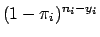
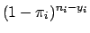
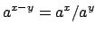

For each population, there are
different ways to arrange  successes from among
successes from among  trials. Since the probability of a success for any one of the
trials. Since the probability of a success for any one of the  trials is
trials is  , the probability of
, the probability of  successes is
. Likewise, the probability of failures is
.
successes is
. Likewise, the probability of failures is
.
The joint probability density function in Eq. 2 expresses the values of
 as a function of known, fixed values for
as a function of known, fixed values for
 . (Note that
. (Note that
 is related to
is related to
 by Eq. 1). The likelihood function has the same form as the probability density function, except that the parameters of the function are reversed: the likelihood function expresses the values of
by Eq. 1). The likelihood function has the same form as the probability density function, except that the parameters of the function are reversed: the likelihood function expresses the values of
 in terms of known, fixed values for
in terms of known, fixed values for
 . Thus,
. Thus,
The maximum likelihood estimates are the values for
 that maximize the likelihood function in Eq. 3. The critical points of a function (maxima and minima) occur when the first derivative equals 0. If the second derivative evaluated at that point is less than zero, then the critical point is a maximum (for more on this see a good Calculus text, such as Spivak [14]). Thus, finding the maximum likelihood estimates requires computing the first and second derivatives of the likelihood function. Attempting to take the derivative of Eq. 3 with respect to
that maximize the likelihood function in Eq. 3. The critical points of a function (maxima and minima) occur when the first derivative equals 0. If the second derivative evaluated at that point is less than zero, then the critical point is a maximum (for more on this see a good Calculus text, such as Spivak [14]). Thus, finding the maximum likelihood estimates requires computing the first and second derivatives of the likelihood function. Attempting to take the derivative of Eq. 3 with respect to
 is a difficult task due to the complexity of multiplicative terms. Fortunately, the likelihood equation can be considerably simplified.
is a difficult task due to the complexity of multiplicative terms. Fortunately, the likelihood equation can be considerably simplified.
First, note that the factorial terms do not contain any of the . As a result, they are essentially constants that can be ignored: maximizing the equation without the factorial terms will come to the same result as if they were included. Second, note that since , and after rearragning terms, the equation to be maximized can be written as:
Substituting Eq. 5 for the first term and Eq. 6 for the second term, Eq. 4 becomes:
This is the kernel of the likelihood function to maximize. However, it is still cumbersome to differentiate and can be simplified a great deal further by taking its log. Since the logarithm is a monotonic function, any maximum of the likelihood function will also be a maximum of the log likelihood function and vice versa. Thus, taking the natural log of Eq. 8 yields the log likelihood function:
To find the critical points of the log likelihood function, set the first derivative with respect to each equal to zero. In differentiating Eq. 9, note that
The maximum likelihood estimates for
 can be found by setting each of the
can be found by setting each of the  equations in Eq. 11 equal to zero and solving for each . Each such solution, if any exists, specifies a critical point-either a maximum or a minimum. The critical point will be a maximum if the matrix of second partial derivatives is negative definite; that is, if every element on the diagonal of the matrix is less than zero (for a more precise definition of matrix definiteness see [7]). Another useful property of this matrix is that it forms the variance-covariance matrix of the parameter estimates. It is formed by differentiating each of the
equations in Eq. 11 equal to zero and solving for each . Each such solution, if any exists, specifies a critical point-either a maximum or a minimum. The critical point will be a maximum if the matrix of second partial derivatives is negative definite; that is, if every element on the diagonal of the matrix is less than zero (for a more precise definition of matrix definiteness see [7]). Another useful property of this matrix is that it forms the variance-covariance matrix of the parameter estimates. It is formed by differentiating each of the  equations in Eq. 11 a second time with respect to each element of , denoted by
. The general form of the matrix of second partial derivatives is
equations in Eq. 11 a second time with respect to each element of , denoted by
. The general form of the matrix of second partial derivatives is
To solve Eq. 12 we will make use of two general rules for differentiation. First, a rule for differentiating exponential functions:
![$\displaystyle \biggl(\frac{f}{g}\biggr)^\prime(a) = \frac{g(a) \cdot f^\prime(a) - f(a) \cdot g^\prime(a)}{[g(a)]^2}$](img60.png)